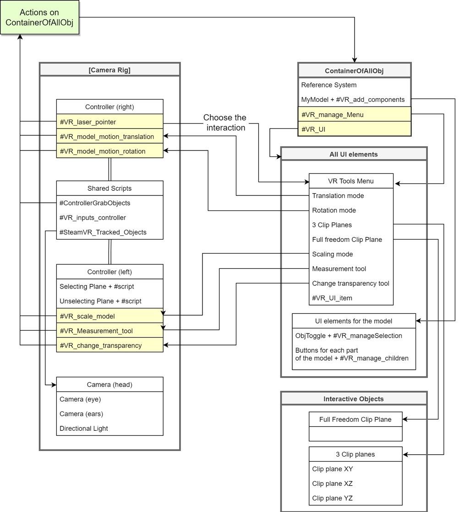

Curious about the source code behind E0102-VR ?
This page contains a brief overview of the source code behind the app. None of what follows is
necessary to actually use the app! However, the hope is that what follows may be of help to
those digging in the source code of E0102-VR.
General overview
E0102-VR was developed using the Unity3D development platform, supplemented with custom c# scripts.
There are four main systems that contain all the scripts used for the interaction: the ‘Camera Rig’,
the ‘ContainerOfAllObj’, all the UI (user Interaction) elements, and the ‘Interactable Objects’.
The Camera Rig contains the right and left controllers of the HTC Vive together with the headset and
all their relative scripts, and it is the system that handles all the user inputs. The inputs are
then either sent to the ‘ContainerOfAllObj’ or to the UI elements of the scene. Each controller has
its own scripts to perform specific actions on the model, plus three ‘Shared scripts’ common to both
the controllers and used to mainly track their position in space and receive user’s inputs.
As soon as the app starts and the user loads the model, the first script that will start will be the
#VR_add_components, which will create all the UI elements relative to the imported 3D model. The idea
of creating this function, instead of having ready-to-use UI elements, is to potentially make the app
flexible enough to allow external users to import their models and automatically generate the needed
elements, without having to worry too much about them. With this approach, once all the needed UI
elements are generated, the app will be fully functional and the user will have complete freedom of
exploring all the interactive capabilities within the scene.
At the very beginning, all the scripts on the controllers (except the #VR_laser_pointer and the
‘Shared Scripts’) are deactivated, meaning that they won’t run, unless they get activated by the
user. The interaction with the UI elements of the scene allows activating and deactivating specific
scripts on the controllers, which in turn perform or not a specific action. For example, if the user
selects the ‘scale mode’ in the VR Tools Menu, the #VR_scale_model script will be activated on the
left controller, which can be now used to scale up or down the SN. The action of scaling will be
transferred to ‘ContainerOfAllObj’, meaning that both the reference system and our model will be
scaled. One should note that some functions are constrained so that only one of them can be switched
on at a time on the same controller. Therefore, switching one of them ON will automatically switch
the others OFF. For example, the ‘scale mode’ and ‘change transparency tool’ belong to the same
exclusive group on the left controller. If the user chooses the ‘scale mode’ first, it will be able
to scale the model in the scene, but as soon as he chooses the ‘change transparency tool’, the
scaling functionalities will be deactivated and he/she will only be able to change the transparency
of the different layers of the model.
General organization of the E0102-VR source code

Brief description of the C# scripts
VR_add_Components:
Attached to the model, it adds all the required components to the model. In particular, it will
create a parent toggle (called ObjToggle) for the model and it will add the Mesh Collider and the
Rigid Body components to each of the model’s parts. The Mesh Collider and the Rigid Body components
are needed to be able to individually grab each of the model’s parts with the controller.
VR_manageSelection:
Attached to the ObjToggle prefab (in Assets/Resources/Prefabs), it creates all the interactive
buttons for each of the model’s parts and helps to show or hide them when one presses on the parent
button.
VR_manageChildren:
Attached to each child button, the script manages the selection and deselection of the parts of the
model (in this case, the different layers of the supernova).
VR_manageMenu:
Attached to ‘ContainerOfAllObj’, the scripts helps managing the Tools Menu (fixed in the Scene and
containing all the possible interactions) and the Object List Menu attached to the left controller,
used to select and deselect the various model’s parts.
VR_UI:
Attached to the ‘ContainerOfAllObjects’, the script handles the selection and deselection of the
various UI elements in the Scene.
VR_UI_item
Attached to each of the buttons in the Tools Menu, the script controls all the interactions with
the model. In particular, it enables and disables the correct C# scripts attached to each controller.
In this way, we can control the specific interactions that we want to use. In particular, the script
has been written to avoid using at the same time:
- - the Full Freedom Clip Plane functionality together with the 3 Clip Planes functionality
- - Scaling and Transparency functionality at the same time.
Next, we review the scripts attached to the controllers.
SteamVR_TrackedObjects:
Attached to each controller and to the headset, the script has been written by the SteamVR team and
it is used to control in-game objects with tracked devices.
VR_inputs_controller:
Attached to each controller, the script takes inputs from the user and creates events used in other
C# scripts to start the interaction with the model in the Scene.
Controller Grab Objects:
This script is attached to both the controllers and it allows grabbing objects in the scene. In
particular, in the code there are two variables called ‘onlyGrabObjWith_TAG1’ and
‘onlyGrabObjWith_TAG2’. These variables are used to choose and set what the left and right
controllers can individually grab. By default, the left controller can only grab the points created
with the Measurement Tool, while the right controller can grab the clipping planes and the model’s
parts. This has been done to avoid confusion and unexpected interactions between the controllers and
the objects in the scene. For example, we want to avoid grabbing the model when we move the
measurement points around it. An important point to remember is that any object to be grabbed needs
to have a 'RigidBody' and a ‘MeshCollider’component attached to it and they have to be in the same
place. The controller also needs to have a 'RigidBody' component attached to it with
useGravity=false and isKinematic=true.
VR_laser_pointer (right=B controller):
The script creates a laser beam that is used for the interaction with the UI elements in the Scene.
It creates two events (PointerIn and PointerOut) that trigger functions inside the VR_UI script.
VR_model_motion_translation (right=B controller):
The script handles the inputs on the touchpad and it moves the ‘ContainerOfAllObj’, which contains
the reference system and the model.
VR_model_motion_rotation (right=B controller):
The script handles the inputs on the touchpad and it rotates the ‘ContainerOfAllObj’, which contains
the reference system and the model.
VR_select_objects (left=A controller):
Attached to the selecting plane of the LEFT controller, the script manages the selection of the
measurement points used to get measurements of the model.
VR_deselect_objects (left=A controller):
Attached to the unselecting plane of the LEFT controller, the script manages the deselection of the
measurement points used to get measurements of the model.
VR_scale_model (left=A controller):
The script handles the input on the touchpad and it scales up or down the ‘ContainerOfAllObj’, which
contains the reference system and the model. Therefore, the reference system will be scaled up or
down together with the model. A suggestion is to define the scaling of your model at the beginning
of the project in order to make sure that everything has the right size when the application runs.
Pressing the central part of the touchpad will bring back the model to its original size.
VR_change_transparency (left=A controller):
The script handles the inputs on the touchpad and it changes the transparency of the selected parts.
In particular, we take the colour components (R, G, B, A) of the material attached to the selected
parts and we change the ‘A’ value. This leads to a change in transparency from a minimum of 0.1 to a
maximum of 1.0 (opaque). One should remember that each individual part of the model can be selected
by using the ‘Object List Menu’ on the left=A controller.
VR_Measurement_tool (left=A controller):
This script handles the creation of the measurement points inside the scene, the creation of the
line between those points, and the calculation of the distance between each of them and their position
in space w.r.t. the reference system. One should note that:
- 1) Once the points are created, they become ‘children’ of the reference system. Moreover, we have
made the design choice of having the scaling of the points strictly linked to the scaling of the
reference system.
- 2) The distance between the points is given in the chosen measurement unit (pc as default) and it
is affected by a constant called scaling factor, which is 1 (as default) and that can be changed
if needed.
- 3) The position of every measurement point in space is given in two coordinate frames:
Cartesian coordinate frame (X, Y, Z), and Spherical coordinate system. By default, the reference
system has the Z axis pointing upwards.
- 4) The text attached to each point will automatically rotate towards the user when the
‘VR_Measurement_Tool’ script is enabled.
Replacing the core model
In principle, no interaction mode is strictly tied to the underlying 3D model. For the (very) daring
user interested to try to swap the model of SNR E0102 for another one of his/her own choosing,
here are some crude instructions on how to do so.
The first thing to do is to import the model inside Unity3D by taking the .mtl and .obj files and dragging
and dropping it in Assets/Resources/Models. One should note that this can be time consuming for large files.
Once the model can be found inside Unity, one can drag and drop it under the ‘ContainerOfAllObj’,
making sure that it is positioned under the Reference System, since a C# script will access the
second child of ‘ContainerOfAllObj’ to perform some tasks. One should then attach the
‘VR_add_Components’ script to the model by taking the script (in Assets/Scripts), and dropping it on
the model.
Once the model is child of ‘ContainerOfAllObj’, it will appear in the Scene. One can click on the
model in the Hierarchy and change its Position, Orientation and Scale by using the Transform tab on
the right. One should note that the render queue values for transparency should be in the [3000..3999]
range to work properly. Transparent queues are sorted back to front. Back to front sorting means that
objects furthest from the camera are rendered first and objects closest to the camera are rendered last.
In case of trouble, one can use the < href="https://docs.unity3d.com/Manual/FrameDebugger.html">
Frame Debugger tool that allows to see in great detail how the Scene is constructed from its
individual graphical elements.